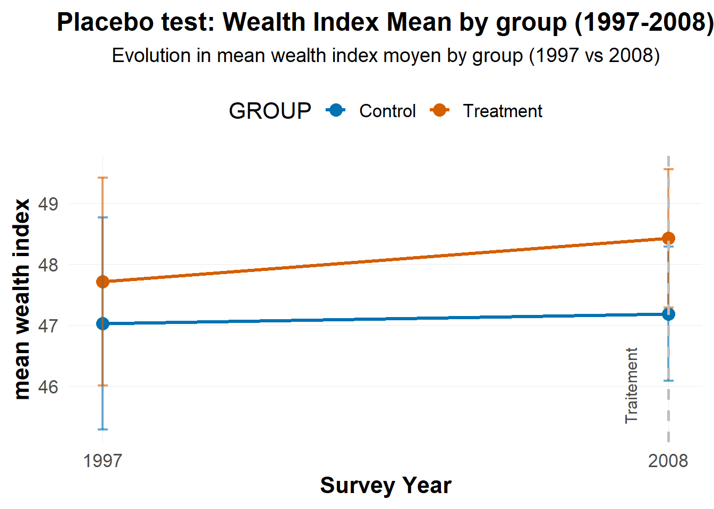
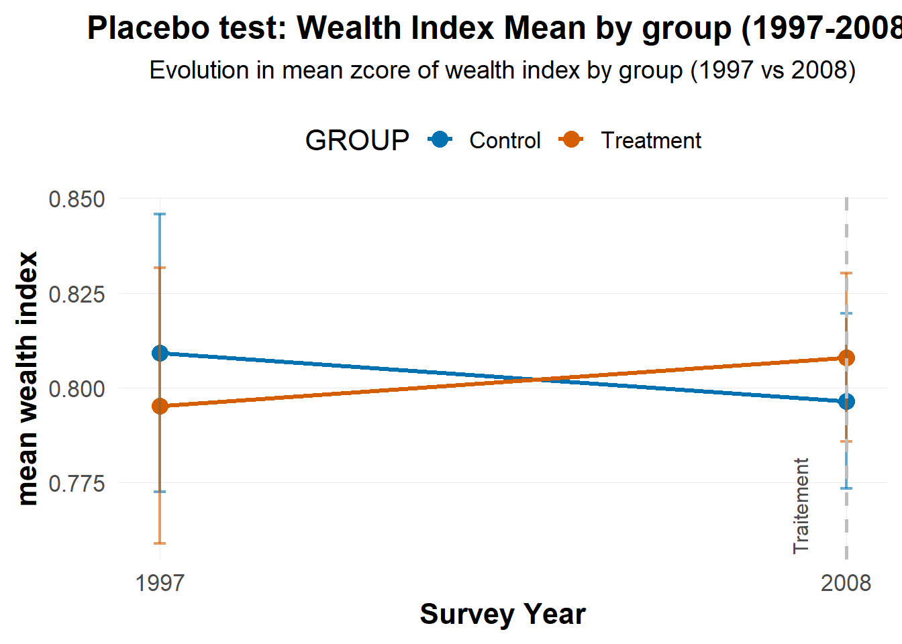

Le document présente l’estimation en double différence des groupes de traitement et de contrôle pour la période 2008 à 2021. Le principe est de comparer l’indice de richesse des ménages de contrôle et de traitement à une période antérieure et à une période postérieure à la mise en place des aires protégées.
9.2 Methods
Nous débutons notre analyse par la définition des périodes de traitement. Puis nous créons un groupe de traitement placebo basé sur les ménages de 1997. Ce placebo est utilisé pour tester l’hypothèse des tendances parallèles, . Après la vérification de la validité de l’hypothèse, nous effectuons une estimation pour le groupe placebo (1997-2008) puis une autre estimation pour la période de 2008-2021.
9.3 Definition of treatment periods
La période de pré-traitement sera les aires protégées créées entre 1997 et 2008. Le post-traitement sera les aires protégées créées entre 2008 et 2021.
Période de pré-traitement: Aires protégées crées entre 1997 et 2008 (34 AP créées sur 23 939 km²)
Période de post-traitement: Aires protégées crées entre 2008 et 2021 (102 AP créées sur 50 856 km²)
Code
# Treatment periods definition--------------------------------# Pre-Treatment (base) = 1997# Post-treatment = 2008-2021 # Librarylibrary(did)library(tidyverse) #Manipulation et visualisation des donnéeslibrary(tmap) #Analyse cartographique library(ggplot2) #Figurelibrary(sf)library(gt) #Mise en forme des tableaux library(MatchIt)library(haven)# Load data data_matched_1997 <-read_rds("data/derived/data_matched_1997.rds")data_matched_2008 <-read_rds("data/derived/data_matched_2008.rds")data_matched_2021 <-read_rds("data/derived/data_matched_2021.rds")# Add year in each datasetdata_matched_1997 <- data_matched_1997 %>%mutate(year =1997)data_matched_2008 <- data_matched_2008 %>%mutate(year =2008)data_matched_2021 <- data_matched_2021 %>%mutate(year =2021)# Standardization of the hv220 column in each dataframe#data_matched_1997$hv220 <- as.numeric(as_factor(data_matched_1997$hv220))#data_matched_2008$hv220 <- as.numeric(as_factor(data_matched_2008$hv220))#data_matched_2021$hv220 <- as.numeric(as_factor(data_matched_2021$hv220))# Renommer les noms des spei du dataframe de 2008 et 2021data_matched_2008 <- data_matched_2008 %>%rename('spei_wc_n-2'= spei_wc_2006,'speiwc_n-1'= spei_wc_2007,'spei_wc_n'= spei_wc_2008 )data_matched_2021 <- data_matched_2021 %>%rename('spei_wc_n-2'= spei_wc_2019,'speiwc_n-1'= spei_wc_2020,'spei_wc_n'= spei_wc_2021 )# Merge the three wavesdata_all <-bind_rows(data_matched_1997, data_matched_2008, data_matched_2021)# Treatment period---------------data_all <- data_all %>%mutate(period_DID =case_when( DHSYEAR ==1997~0, # 0 indique le Pre-treatment DHSYEAR %in%c(2008,2021) ~1# 1 indique le Post-treatment ) )pre_treatment <- data_all %>%filter(period_DID ==0)post_treatment <- data_all %>%filter(period_DID ==1)
Nous obtenons 1 930 observations pour le pre_treatment et 11 500 observations pour la période de post_treatment.
9.4 Testing the parallel trends hypothesis
La méthode de double différence repose sur des hypothèses de tendances parallèlles. Pour tester la validité de cette hypothèse, nous construisons un groupe de traitement et de contrôle placebo basé sur les ménages ruraux enquêtés en 1997. Le groupe de traitement placebo comprend ceux qui vivent dans une zone située dans ou à moins de 10 km d’une aire protégée créée entre 2008 et 2021, et le groupe de contrôle placebo est composé de ceux qui leur sont appariés. Ce test placebo a pour but de vérifier si les deux groupes suivaient des tendances similaires avant l’introduction du traitement. Si un effet est observé pendant la période placebo, cela pourrait indiquer que les tendances pré-traitement n’étaient pas parallèles, remettant en question la validité de l’estimation DID. Il faut donc que le résultat de ce test soit nul ou statistiquement non significatif pour renforcer l’idée que les zones traitées et non traitées évoluaient de manière similaire avant la mise en place des aires protégées étudiées sur la période 2008-2021.
Nous allons appliquer pour le test deux outcomes dont le wealth index et le z-score du wealth index.
9.4.1 Test with the principal outcome: Wealth index
Code
#--------------------------------------------------# Test Placebo sur 1997-2008 with outcome = wealth index #--------------------------------------------------library(scales) # pour des échelles graphiques# Placebo treatment group = ménages à ≤ 10 km des AP créées entre 2008 et 2021# Placebo control group = ménages à plus de 10 km des AP créées entre 2008 et 2021placebo_data <- data_all %>%filter(DHSYEAR %in%c(1997,2008)) %>%mutate(placebo_treated =ifelse(GROUP =="Treatment", 1, 0), # 1 si ≤ 10 km, O sinonpost =ifelse(DHSYEAR ==2008, 1, 0) # post = 1 pour 2008 et 0 pour l'année 1997 )# DID Regression placebo: 1997-2008----------placebo_data <- placebo_data %>%# Add control variables mutate(sex_head =as.factor(hv219),age_head = hv220,forest_cover_rate = treecover_area_2000,slope = slope_2000,elevation = elevation_2000,population_count = population_count_2000,accessibility = traveltime_2000_2000,spei_wc_1995 = spei_wc_1995,spei_wc_1996 = spei_wc_1996,spei_wc_1997 = spei_wc_1997 )# Estimationdid_placebo <-lm(wealth_centile_rural_simple ~ placebo_treated + post + placebo_treated:post + spei_wc_1995 + spei_wc_1996 + spei_wc_1997 + hv219 + hv220, data = placebo_data)summary(did_placebo)
Call:
lm(formula = wealth_centile_rural_simple ~ placebo_treated +
post + placebo_treated:post + spei_wc_1995 + spei_wc_1996 +
spei_wc_1997 + hv219 + hv220, data = placebo_data)
Residuals:
Min 1Q Median 3Q Max
-54.457 -22.696 0.983 20.893 62.101
Coefficients: (2 not defined because of singularities)
Estimate Std. Error t value Pr(>|t|)
(Intercept) 37.61051 3.01661 12.468 < 2e-16 ***
placebo_treated 0.47559 1.23877 0.384 0.7011
post NA NA NA NA
spei_wc_1995 9.55243 1.49132 6.405 1.88e-10 ***
spei_wc_1996 9.21054 1.66092 5.545 3.34e-08 ***
spei_wc_1997 -4.17350 1.76017 -2.371 0.0178 *
hv219 -2.65234 1.52486 -1.739 0.0821 .
hv220 0.09741 0.03946 2.469 0.0137 *
placebo_treated:post NA NA NA NA
---
Signif. codes: 0 '***' 0.001 '**' 0.01 '*' 0.05 '.' 0.1 ' ' 1
Residual standard error: 26.84 on 1922 degrees of freedom
(4839 observations effacées parce que manquantes)
Multiple R-squared: 0.03466, Adjusted R-squared: 0.03164
F-statistic: 11.5 on 6 and 1922 DF, p-value: 1.122e-12
Code
# Coefficient presentationtidy(did_placebo)
# A tibble: 9 × 5
term estimate std.error statistic p.value
<chr> <dbl> <dbl> <dbl> <dbl>
1 (Intercept) 37.6 3.02 12.5 2.30e-34
2 placebo_treated 0.476 1.24 0.384 7.01e- 1
3 post NA NA NA NA
4 spei_wc_1995 9.55 1.49 6.41 1.88e-10
5 spei_wc_1996 9.21 1.66 5.55 3.34e- 8
6 spei_wc_1997 -4.17 1.76 -2.37 1.78e- 2
7 hv219 -2.65 1.52 -1.74 8.21e- 2
8 hv220 0.0974 0.0395 2.47 1.37e- 2
9 placebo_treated:post NA NA NA NA
Code
# Statistiquesevolution_placebo <- placebo_data %>%group_by(DHSYEAR, GROUP) %>%summarise(mean_value =mean(wealth_centile_rural_simple , na.rm =TRUE),sd_value =sd(wealth_centile_rural_simple , na.rm =TRUE),n =n(),se = sd_value /sqrt(n),.groups ="drop" )# Ajout d'un label pour différencier la période pré/ postevolution_placebo <- evolution_placebo %>%mutate(period =ifelse(DHSYEAR <2008, "Pre-treatment", "Post-treatment"))# Plotggplot(evolution_placebo,aes(x = DHSYEAR, y = mean_value, color = GROUP, group = GROUP)) +geom_point(size =4) +geom_line(size =1.2) +geom_errorbar(aes(ymin = mean_value -1.96* se, ymax = mean_value +1.96* se),width =0.2, size =0.8, alpha =0.6) +geom_vline(xintercept =2008, linetype ="dashed", color ="grey", size =1) +annotate("text", x =2007.5, y =max(evolution_placebo$mean_value) *0.95,label ="Traitement", angle =90, vjust =-0.5, size =4, color ="grey30") +scale_color_manual(values =c("Treatment"="#D55E00", "Control"="#0072B2")) +scale_x_continuous(breaks =c(1997, 2008), labels =c("1997", "2008")) +labs( title ="Placebo test: Wealth Index Mean by group (1997-2008)",subtitle ="Evolution in mean wealth index moyen by group (1997 vs 2008)",x ="Survey Year",y ="mean wealth index" ) +theme_minimal(base_size =16) +theme(plot.title =element_text(face ="bold", hjust =0.5, size =18),plot.subtitle =element_text(hjust =0.5, size =14, margin =margin(b =15)),axis.title =element_text(face ="bold"),legend.position ="top",panel.grid.major =element_line(size =0.3),panel.grid.minor =element_blank() )

Le graphique présente les moyennes de l’indice de richesse (wealth_centile_rural_simple) pour les groupes de traitement et de contrôles pour les années 1997 et 2008. Le point en orange représente la moyenne de l’indice de richesse pour le groupe de traitement et le point en bleu est celui du groupe de contrôle. En 1997, les deux moyennes sont proches pour les deux groupes dont une valeur de -1.79 pour les groupes de traitement et -1.97 pour les groupes de contrôle. En 2008, les deux moyennes baissent mais restent relativement proches (Groupe de traitement = -2.80 et Groupe de controle = -3.45). D’après ces résultats, il n’y a pas de différence marquée dans l’évolution de la richesse entre les deux groupes sur la période 1997-2008, période où aucune aire protégée n’a été crée pour ces groupes. L’hypothèse des tendances parallèles est donc vérifié.
9.4.2 Test with the secondary outcome: Z-score of the Wealth index
Code
#--------------------------------------------------# Test Placebo sur 1997-2008 with outcome = wealth index #--------------------------------------------------# Estimationdid_placebo <-lm(zscore_wealth ~ placebo_treated + post + placebo_treated:post + spei_wc_1995 + spei_wc_1996 + spei_wc_1997 + hv219 + hv220, data = placebo_data)summary(did_placebo)
Call:
lm(formula = zscore_wealth ~ placebo_treated + post + placebo_treated:post +
spei_wc_1995 + spei_wc_1996 + spei_wc_1997 + hv219 + hv220,
data = placebo_data)
Residuals:
Min 1Q Median 3Q Max
-0.8301 -0.4504 -0.0971 0.3254 3.1649
Coefficients: (2 not defined because of singularities)
Estimate Std. Error t value Pr(>|t|)
(Intercept) 0.8378397 0.0650123 12.887 <2e-16 ***
placebo_treated -0.0152439 0.0266973 -0.571 0.568
post NA NA NA NA
spei_wc_1995 0.0275308 0.0321402 0.857 0.392
spei_wc_1996 0.0152931 0.0357952 0.427 0.669
spei_wc_1997 -0.0209518 0.0379343 -0.552 0.581
hv219 -0.0305887 0.0328630 -0.931 0.352
hv220 -0.0001841 0.0008504 -0.216 0.829
placebo_treated:post NA NA NA NA
---
Signif. codes: 0 '***' 0.001 '**' 0.01 '*' 0.05 '.' 0.1 ' ' 1
Residual standard error: 0.5784 on 1922 degrees of freedom
(4839 observations effacées parce que manquantes)
Multiple R-squared: 0.001369, Adjusted R-squared: -0.001748
F-statistic: 0.4392 on 6 and 1922 DF, p-value: 0.8529
Code
# Coefficient presentationtidy(did_placebo)
# A tibble: 9 × 5
term estimate std.error statistic p.value
<chr> <dbl> <dbl> <dbl> <dbl>
1 (Intercept) 0.838 0.0650 12.9 1.64e-36
2 placebo_treated -0.0152 0.0267 -0.571 5.68e- 1
3 post NA NA NA NA
4 spei_wc_1995 0.0275 0.0321 0.857 3.92e- 1
5 spei_wc_1996 0.0153 0.0358 0.427 6.69e- 1
6 spei_wc_1997 -0.0210 0.0379 -0.552 5.81e- 1
7 hv219 -0.0306 0.0329 -0.931 3.52e- 1
8 hv220 -0.000184 0.000850 -0.216 8.29e- 1
9 placebo_treated:post NA NA NA NA
Code
# Statistiquesevolution_placebo_Zscore <- placebo_data %>%group_by(DHSYEAR, GROUP) %>%summarise(mean_value =mean(zscore_wealth , na.rm =TRUE),sd_value =sd(zscore_wealth , na.rm =TRUE),n =n(),se = sd_value /sqrt(n),.groups ="drop" )# Ajout d'un label pour différencier la période pré/ postevolution_placebo_Zscore <- evolution_placebo_Zscore %>%mutate(period =ifelse(DHSYEAR <2008, "Pre-treatment", "Post-treatment"))# Plotggplot(evolution_placebo_Zscore,aes(x = DHSYEAR, y = mean_value, color = GROUP, group = GROUP)) +geom_point(size =4) +geom_line(size =1.2) +geom_errorbar(aes(ymin = mean_value -1.96* se, ymax = mean_value +1.96* se),width =0.2, size =0.8, alpha =0.6) +geom_vline(xintercept =2008, linetype ="dashed", color ="grey", size =1) +annotate("text", x =2007.5, y =max(evolution_placebo_Zscore$mean_value) *0.95,label ="Traitement", angle =90, vjust =-0.5, size =4, color ="grey30") +scale_color_manual(values =c("Treatment"="#D55E00", "Control"="#0072B2")) +scale_x_continuous(breaks =c(1997, 2008), labels =c("1997", "2008")) +labs( title ="Placebo test: Wealth Index Mean by group (1997-2008)",subtitle ="Evolution in mean zcore of wealth index by group (1997 vs 2008)",x ="Survey Year",y ="mean wealth index" ) +theme_minimal(base_size =16) +theme(plot.title =element_text(face ="bold", hjust =0.5, size =18),plot.subtitle =element_text(hjust =0.5, size =14, margin =margin(b =15)),axis.title =element_text(face ="bold"),legend.position ="top",panel.grid.major =element_line(size =0.3),panel.grid.minor =element_blank() )

9.5 Estimation du modèle DID avec l’outcome principal
Estimation du modèle DID
Estimation du modèle DID en utilisant des erreurs standards robustes aux corrélations intra-grappes pour gérer la dépendance des observations au sein des grappes:
calcul des résidus à partir du modèle de régression
Utilisation des résidus calculés pour construire une matrice variance-covariance robuste, qui va ajuster la corrélation intra-grappe
Code
#---------------------------------------------#DID Estimation with controls (2008-2021)#--------------------------------------------library(sandwich)library(lmtest)# Treatment period: 2008-2021model_data <- data_all %>%filter(DHSYEAR %in%c(2008,2021)) %>%mutate(treated =ifelse(GROUP =="Treatment", 1, 0),post =ifelse(DHSYEAR ==2021, 1, 0) ) %>%filter(!if_any(c("wealth_centile_rural_simple", "treated", "post"), is.na)) %>%# Add control variables mutate(sex_head =as.factor(hv219),age_head = hv220,forest_cover_rate = treecover_area_2000,slope = slope_2000,elevation = elevation_2000,population_count = population_count_2000,accessibility = traveltime_2000_2000,`spei_wc_n-2`=`spei_wc_n-2`,`speiwc_n-1`=`speiwc_n-1`,spei_wc_n =spei_wc_n )# Main DID regression with robust standard errors per clusterdid_2008_2021 <-lm( wealth_centile_rural_simple ~ treated * post + sex_head + age_head + forest_cover_rate + slope + elevation + population_count + accessibility +`spei_wc_n-2`+`spei_wc_n-2`+`spei_wc_n`, data = model_data )summary(did_2008_2021)
#-------------------------------------------------#Erreurs standards robustes intra-cluster (hv001)#-------------------------------------------------cluster_se <-function(model, cluster) {# Extraction des observations utilisées dans le modèle cluster <- cluster[as.numeric(rownames(model$model))]# Calcul des quantiles nécessaires M <-length(unique(cluster)) # nombre de clusters N <-length(cluster) # nombre d'observations K <- model$rank # nombre de paramètres estimés# Correction de variance dfc <- (M/ (M-1) * (N-1) / (N-K))# Calcul des scores agrégés au niveau des clusters uj <-apply(estfun(model), 2, function(x) tapply(x, cluster, sum))# Matrice de variance-covariance clusterisée vcovCL <- dfc *sandwich(model, meat =crossprod(uj)/N)return(vcovCL)}# Application aux résultats DIDif("hv001"%in%names(model_data)){ cl_vcov <-cluster_se(did_2008_2021, model_data$hv001) cluster_results <-coeftest(did_2008_2021, vcov. = cl_vcov)print(cluster_results)} else {summary(did_2008_2021)}
#-------------------------------------------------#Erreurs standards robustes intra-cluster (hv001)#-------------------------------------------------cluster_se <-function(model, cluster) {# Extraction des observations utilisées dans le modèle cluster <- cluster[as.numeric(rownames(model$model))]# Calcul des quantiles nécessaires M <-length(unique(cluster)) # nombre de clusters N <-length(cluster) # nombre d'observations K <- model$rank # nombre de paramètres estimés# Correction de variance dfc <- (M/ (M-1) * (N-1) / (N-K))# Calcul des scores agrégés au niveau des clusters uj <-apply(estfun(model), 2, function(x) tapply(x, cluster, sum))# Matrice de variance-covariance clusterisée vcovCL <- dfc *sandwich(model, meat =crossprod(uj)/N)return(vcovCL)}# Application aux résultats DIDif("hv001"%in%names(model_data)){ cl_vcov <-cluster_se(did_2008_2021, model_data$hv001) cluster_results <-coeftest(did_2008_2021, vcov. = cl_vcov)print(cluster_results)} else {summary(did_2008_2021)}